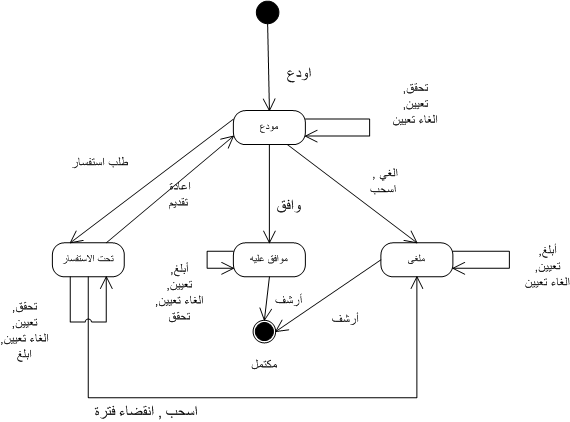

دورة حياة الطلب
تمر الطلبات بعدة حالات اثناء معالجتها في سولا. ولكي يتم تحويل الطلب من حالة الى أخرى يلزم اجراء بعض الحركات على الطلب. بعض الحركات لا تؤثر على حالة الطلب. وعموما فان الحركات التي يمكن إجراؤها تتلخص في :
- ايداع – تحدث هذه الحركة عند حفظ الطلب لاول مرة. حركة الايداع تحول الطلب الى حالة "مودع"
- تحقق من صحة – التحقق من صحة بيانات الطلب, حيث يتم عرض النتائج في صفحة التحقق من بيانات الطلب . للتحقق من بيانات الطلب استخدم اداة التحكم "تحقق" في شاشة تفاصيل الطلب
- تعيين – تعيين الطلب لمستخدم معين. يتم تفعيلها من شاشة تعيين الطلب
- الغاء تعيين –يتم الغاء تعيين الطلب من المستخدم المعين . يتم تفعيلها من شاشة تعيين الطلب.
- طلب استفسار – يتم تحويل الطلب الى حالة الاستفسار عندما يتم طلب مزيد من المعلومات من مقدم الطلب او وكيله. عندما تتحول حالة الطلب الى "طلب استفسار" يتم وضع الطلب في حالة الانتظار . اداة طلب الاستفسار تكون فعالة اذا كان الطلب مودعا ومعينا على مستخدم
- اعادة التقديم – عندما يتم تزويد جميع المعلومات المطلوبة من مقدم الطلب او وكيله يتم تحويل الطلب الى حالة " اعادة التقديم ". يمكن الوصول الى حالة اعادة التقديم من ادوات تفاصيل الطلب . هذه الادوات تكون مفعلة فقط اذا كان الطلب في حالة "طلب استفسار" ومعينا لمستخدم
- سحب طلب –يستطيع مقدم الطلب او الوكيل طلب سحب الطلب قبل الموافقة عليه.لسحب طلب , استخدم ادوات سحب الطلب في شاشة تفاصيل الطلب. عند سحب الطلب يتم تحويل الطلب الى حالة " ملغى ". أدوات سحب الطلب تكون فعالة اذا كان الطلب في حالة "طلب استفسار" أو مودع ومعين لمستخدم.
- زوال فترة زمنية – الطلبات التي مر عليها فترة طويلة من الزمن بدون استجابة من مقدم الطلب او وكيله تعتبر طلبات انقضت فترتها. لازالة مفعول طلب, استخدم ادوات زوال فترة زمنية من شاشة تفاصيل الطلب. هذه الحركة تحول حالة الطلب الى "ملغى". يتم تفعيل هذه الحركة اذا كان الطلب في حالة "طلب استفسار" ومعين على مستخدم..
- الغاء – يمكن الغاء الطلبات التي تم خلقها بالخطا او اصبحت باطلة او تم رفضها عقب تقييم من دائرة الاراضي وذلك باستخدام اداة الالغاء من شاشة تفاصيل الطلب . يتم تحويل حالة الطلب الة "ملغى" بعد الغائه. يتم تفعيل هذا الخيار اذا كان الطلب مودعا
- موافقة – بعد تقييم الطلب والانتهاء من جميع الخدمات (انهاء او الغاء ) , يمكن الموافقة على الطلب باستخدام ادوات الموافقة من شاشة تفاصيل الطلب . تقوم حركة الموافقة بفحص جميع قواعد الاعمال المرتبطة بالموافقة حيث يتم تحويله الى حالة "موافق عليه" اذا نجحت عملية الفحص. اداة الموافقة تكون فعالة اذا كان الطلب في حالة "مودع" ومعين على مستخدم وتم الانتهام من جميع الخدمات او انهاؤها.
- ابلاغ – يمكن اعلام مقدم الطلب او وكيله عبر الرسائل , البريد الالكتروني او الاتصال التلفوني باستخدام اداة التبليغ من ادوات شاشة تفاصيل النظام. عند الامكان , يتم ارفاق صورة البلاغ مع وثائق الطلب للرجوع اليها. اداة الابلاغ تكون فعالة اذا كان الطلب موافق عليه, في حالة طلب استفسار او ملغى.
- أرشفة – بعد الانتهاء من معالجة الطلب وبعث البلاغات, يمكن انهاء العمل على الطلب باستخدام ادة الارشفة . حركة الارشفة تحول الطلب الى حالة "مكتمل" . اداة الارشفة تكون فعالة اذا كان الطلب موافق عليه او ملغى
الشكل التالي يوضح المراحل التي يمر بها الطلب وتاثير كل حركة على هذه الحالات

انظر ايضا